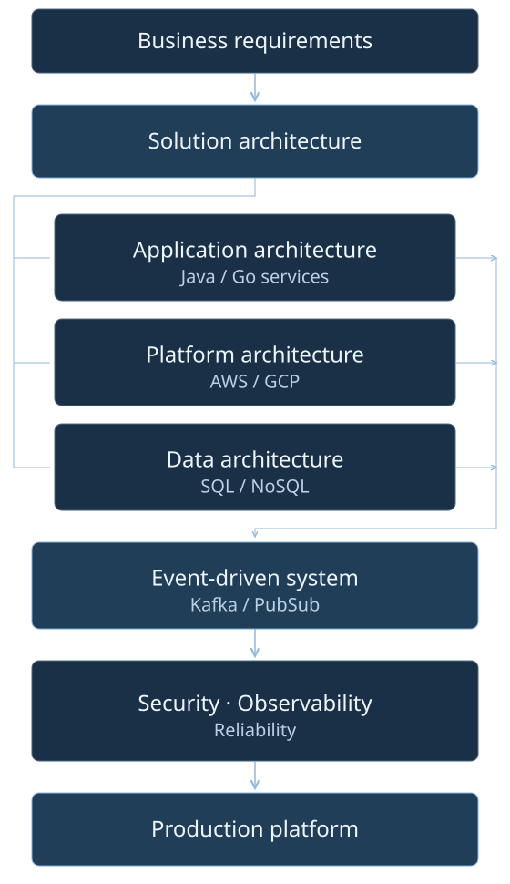
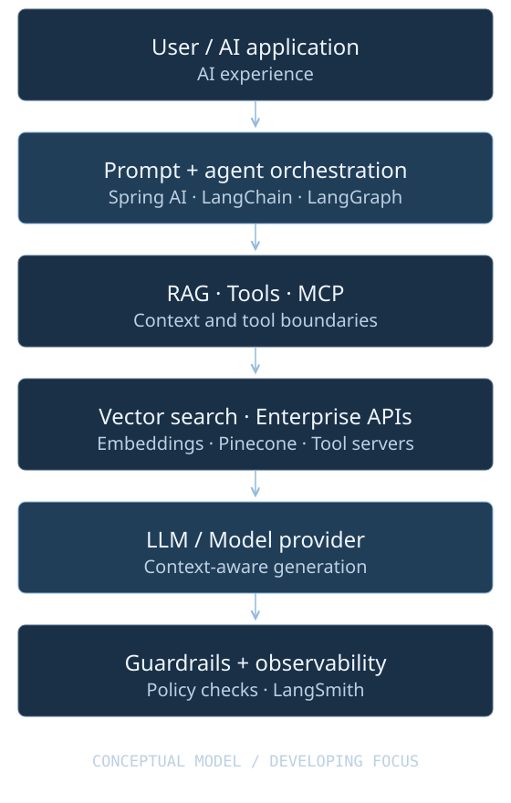

Years of experience
Engineering & architecture · Since 2015
ENGINEERING SYSTEMS. SHAPING ARCHITECTURE.
Java / Go SDE-3 &
Solution Architect
I design architecture and build the systems behind it. 10+ years delivering secure, scalable enterprise platforms—from service boundaries to production readiness.
Currently: Publicis Sapient · Manager – Technology (Java Architect)
Cloud-Native · Distributed Systems · Microservices
Kafka ·
AWS/GCP · Generative AI
ENTERPRISE EXPERIENCE Employers & client engagements
01 / PROFESSIONAL PROFILE
From technical discovery to production operations, I connect business requirements with practical, resilient software architecture.
I’m a Java Solution Architect with 10+ years of experience designing and delivering secure, scalable, cloud-ready enterprise solutions. My work spans modern Java, Go, microservices, and event-driven systems.
I lead engineering teams and technical decisions while staying close to implementation, deployment, reliability, and operations. My next chapter deepens that work in solution architecture and AI-enabled systems.
Engineering & architecture · Since 2015
Publicis Sapient · Architecture scope
HTC · World Bank modernization
HTC · Engineering quality standards
CIS · Asynchronous reporting
STC · Backend modernization
02 / TECHNICAL EXPERTISE
Backend depth, architecture breadth.
The tools to carry a
system through its full lifecycle.
Java / Go / Python / JavaScript / TypeScript
Spring Boot / Quarkus / Micronaut / Gin
Microservices / DDD / EDA / Clean Architecture
Kafka / RabbitMQ / Pub/Sub / SQS/SNS
AWS / GCP / Kubernetes
PostgreSQL / DynamoDB / Cassandra / Redis
OpenTelemetry / Prometheus / Grafana
RAG / Agents / LangChain / Spring AI / MCP
Java 21/17 · Spring Boot · Hibernate/JPA · Quarkus · Micronaut · Go / Golang · Gin · Gorm · Python · Flask · FastAPI · SQLAlchemy · JavaScript · TypeScript · Angular · React · Node.js · Scala · Kotlin
Microservices · Domain-Driven Design · Event-Driven Architecture · Hexagonal Architecture · Clean Architecture · Modular Monolith · API-First Design · SOLID · Design Patterns · Architecture Decision Records · C4 Model · Application Modernization
REST · OpenAPI / Swagger · GraphQL · gRPC · WebSocket · Server-Sent Events · SOAP · API Gateway
Apache Kafka · Kafka Streams · Apache Flink · Schema Registry · RabbitMQ · NATS · AWS SQS · AWS SNS · Google Cloud Pub/Sub · Transactional Outbox · Dead-Letter Queues · Idempotency
EC2 · ECS · EKS · Fargate · Lambda · S3 · RDS · DynamoDB · API Gateway · CloudWatch · IAM
GKE · Cloud Run · Cloud SQL · Cloud Storage · Pub/Sub · Cloud Logging
Docker · Kubernetes · Helm · Terraform
GitLab CI/CD · GitHub Actions · Azure Pipelines · CI/CD Automation · Snyk
PostgreSQL · Oracle 19c · DynamoDB · Cassandra · Redis · InfluxDB · CouchDB · Data Modeling · Polyglot Persistence · Distributed Caching · Query Optimization
OpenTelemetry · Prometheus · Grafana · Jaeger · Splunk · Datadog · Dynatrace · New Relic · PagerDuty · Distributed Tracing · Centralized Logging · Metrics · APM · SLI · SLO · SLA · Error Budgets · Alerting
OAuth 2.0 · OpenID Connect · JWT · SSO · mTLS · MFA · RBAC · ABAC · Fine-Grained Authorization · Zero Trust · OWASP Top 10 · Keycloak · Okta · Open Policy Agent · Secrets Management
JUnit 5 · Mockito · Testcontainers · REST Assured · Spring Cloud Contract · Cucumber · JMeter · k6 · Unit Testing · Integration Testing · Contract Testing · Performance Testing · Load Testing
Solution Architecture · Architecture Reviews · Design Reviews · Production Readiness · Technical Estimation · Client Advisory · Engineering Mentorship · Agile · Scrum · Nexus · SAFe
Prompt Engineering · LLM Architecture · RAG · Embeddings · Vector Search · AI Agents · Agentic Workflows · Tool Calling · Function Calling · Guardrails · Spring AI · LangChain · LangGraph · LangSmith · Pinecone · Model Context Protocol (MCP)
Explore the AI architecture focus →03 / PROFESSIONAL EXPERIENCE
Software engineering → Technical leadership → Architecture & technology management
02/2026 — Present
Current rolePublicis Sapient
Bangalore, India · Tesco — Onsite
Enterprise hybrid eventing · Architecture across 10 engineering pods
07/2024 — 11/2025
HTC Global Services
Chennai, India · World Bank Group & CNA Insurance — Remote
Enterprise modernization · Event-driven document processing
09/2020 — 06/2024
Siemens
Gurgaon, India
Siemens Energy · Siemens Xcelerator · Java / Go
08/2018 — 07/2020
Cyber Infrastructure — CIS
Indore, India
Client solution design · High-volume reporting
06/2015 — 07/2018
Skyway Technocom — STC
Pune, India
Java backend engineering · Enterprise applications
04 / SOLUTION ARCHITECTURE
Clear boundaries. Explicit trade-offs. Production readiness from the start.
Scalability, resilience, asynchronous communication, consistency, caching, idempotency, failure handling, and service decoupling.
Kafka, Pub/Sub, RabbitMQ, transactional outbox, schema management, dead-letter queues, and explicit event contracts.
AWS and GCP platforms, Kubernetes, serverless workloads, containers, and infrastructure automation.
REST, gRPC, GraphQL, OpenAPI, gateways, versioning, and API security to support clear integration boundaries.
SLIs, SLOs, error budgets, retries with exponential backoff, circuit breakers, observability, and failure recovery.
OAuth 2.0, OIDC, JWT, mTLS, RBAC, ABAC, and Zero Trust across service and platform boundaries.

Explore the professional system summaries below, including architecture scope, technology choices, and production concerns.
View selected systems05 / THE NEXT ARCHITECTURE CHAPTER
Bringing system-design discipline to AI-enabled applications.
Developing architecture focus
Expanding into LLM application architecture, retrieval-augmented generation, and agents—with attention to tool boundaries, guardrails, and observability. These are skill and learning areas; no production GenAI case study is claimed.
Prompt Engineering · LLM Architecture · Spring AI
RAG · Embeddings · Vector Search · Pinecone
AI Agents · Agentic Workflows · LangChain · LangGraph
Tool Calling · Function Calling · MCP · Guardrails · LangSmith

06 / ENGINEERING IN PRACTICE
Selected systems from professional experience, alongside a conceptual AI reference model. Public implementation artifacts are not yet linked; the summaries describe the scope documented in this portfolio.
Java · Microservices · Event-Driven Architecture · Distributed Systems
Solution architecture for Tesco’s enterprise hybrid eventing platform, defining service boundaries, API and event contracts, messaging patterns, data-retention strategies, multi-tenancy, resilience, security, observability, and non-functional requirements across 10 engineering pods.
Java · Go · AWS · Kafka · RabbitMQ · Distributed Systems
Production-grade microservices and cloud services for Siemens platforms, combining Java/Spring Boot and Go/Gin services with asynchronous messaging, containerized workloads, serverless processing, polyglot persistence, and operational observability.
Generative AI · RAG · AI Agents · MCP · Vector Search
Reference architecture for enterprise Generative AI applications, combining retrieval-augmented generation, semantic retrieval, agent orchestration, tool integration, guardrails, and LLM observability.
07 / EDUCATION
SIRT Bhopal, RGPV
08 / LET’S CONNECT
For senior engineering, solution architecture, and technical leadership conversations.
Resume opens in Google Drive, where a download is available.